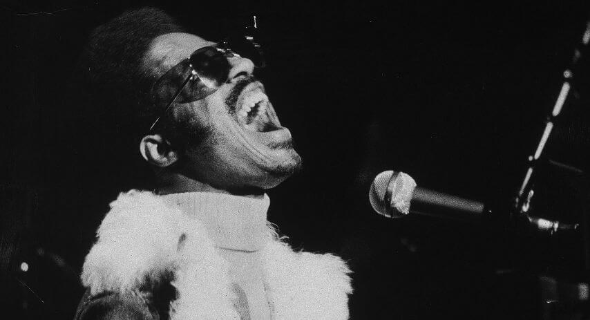

But soon doctors ruled out that it could have serious consequences of the accident, being his friend and tour director Ira Tucker who got a first response from Stevie in his coma. Ira Tucker commented" I remember when I got to the hospital in Winston-Salem ... man, I could not even recognize him. His head was swollen until about five his normal size. Nobody had managed to communicate with him. I knew that he liked to listen to music very loudly and I thought maybe if I shouted in his ear ... the doctor told me to try. The first time I did it not receive any response, but the next day I went back and I got right down in his ear and sang Higher Ground. His hand rested on my arm and after a while his fingers began to leave to the rhythm of the song. I said yes! Yeeeeaaah! He's going to get it!".
He was transferred to Los Angeles, where he began a long and hard convalescence. He realized that he had lost the sense of smell and taste. The latter managed to recover it, although Stevie's biggest concern was whether his skill as a musician was intact. Again Ira Tucker was his motivator: "
We brought one of his instruments - I think it was the clavinet - to the hospital. For a while, Stevie simply got stuck by his side, did nothing with him. He could feel his panic to touch him, his nervousness and fear of having lost his ability and symbiosis with the instrument, he did not know if he could still play and play with the keyboard. But finally he touched him, man, you could only see happiness spread over him. I will never forget it". For a year he had to take medication to relieve the severe headaches, and the great fatigue he had.
But his recovery can be considered as miraculous. Speaking about his accident he said
that "
you can never change what has happened, everything is the way it has to be, and everything that happened to me had to happen", reaffirming his belief that we all have a destiny in the life.

Stevie Wonder reappeared in public at the end of September, playing along Elton John in the city of Boston. It was the concert with which Elton John closed his American tour. The doctors had forbidden Stevie to be exceeded in his activity as musician, so Stevie stayed away from more performances
dedicating himself to his compositional side for his new album
'Fullfillingness' First Finale'. It was already on January 20, 1974 when Stevie Wonder - already quite recovered - began with a concert the international gala of Cannes, MIDEM in France. He then traveled to London for a show at the Rainbow theater, then returned to the United States to pick up three Grammy awards. The planned tour before the accident for 20 cities between March and April 1974 was suspended except for Madison Square Garden at the end of March.
There an excited Stevie Wonder looked at the sky, and showing his scars on his forehead, he thanked God for being alive.
The divine knew that Stevie had a lot to offer us yet, the human knew our need for him, and that second opportunity arose.
A miracle called Stevie Wonder that allowed humanity to win over a being that revolutionized the concept of soul music, a being dedicated to transmit love and sanity in times critical and difficult to live.
If our destiny is already written in the stars, Stevie Wonder's stellar parchment still has
a lot to show us. Much more love to share, much more emotions to share, and why not, still
much more music to surprise us.